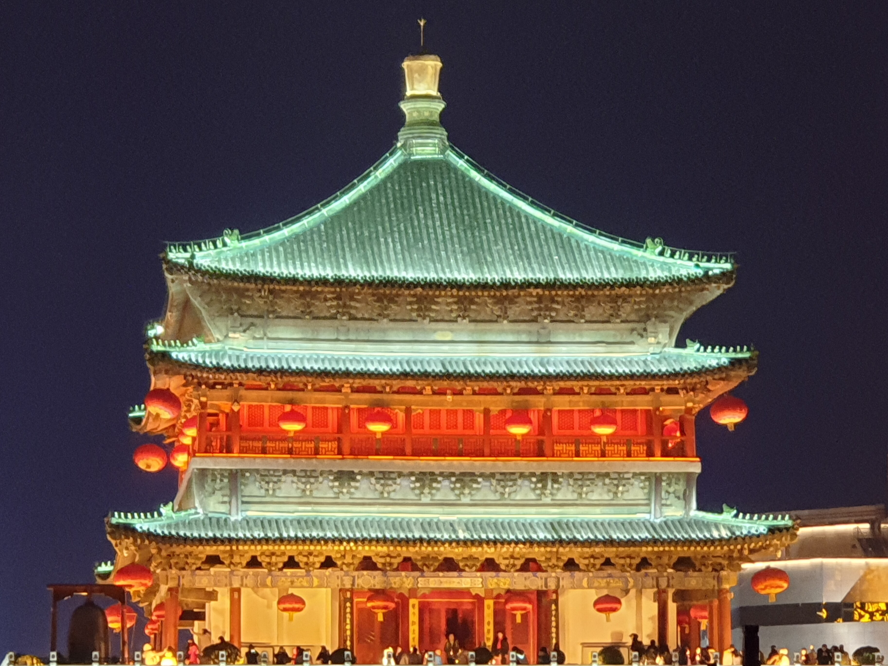
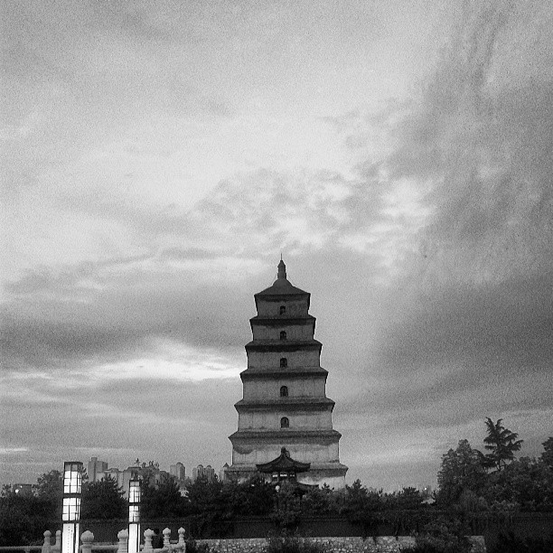

City-centre landmarkThe Bell Tower gives Xi'an one of its most memorable urban images.
The Bell Tower is important because it represents more than one building in the city centre. It works as a visual anchor for Xi'an, linking historical memory with present-day urban movement. In a city-promotion website, it is especially valuable because it helps explain Xi'an not only as an ancient capital, but also as a living city with a strong and recognisable centre.



The Bell Tower belongs to the historical core of Xi'an and has long been associated with the organisation of the city centre. Because of its location and recognisable form, it became one of the landmarks through which people understand Xi'an as an old capital.
Unlike archaeological sites outside the city centre, the Bell Tower is woven into the daily movement of urban life. That makes it especially useful in this project because it bridges historical meaning and present-day city experience.
The tower matters not only because it is old, but because it still functions as a point of orientation in the contemporary city. This allows Xi'an to be presented as historically layered rather than historically frozen.
The Bell Tower is one of the landmarks that most clearly combines tourism value, recognisable design, and city-centre symbolism.
For many visitors, the Bell Tower becomes one of the first and strongest visual memories of Xi'an. It offers a clear image of the city centre and helps distinguish Xi'an from cities whose landmarks are less structurally tied to urban identity.
The Bell Tower is closely connected with the city's spatial and symbolic centre.
Its architecture gives Xi'an a landmark that is easy to remember and easy to associate with the city.
It keeps historical identity visible inside the movement of the present-day city.
This landmark is especially effective after dark, when lighting and surrounding traffic make it feel more dramatic and more memorable.
That is why this page matters in the website. It allows the project to explain Xi'an not only through imperial history or religious culture, but also through the visual strength of its city centre. This improves both the design narrative and the historical balance of the full submission.